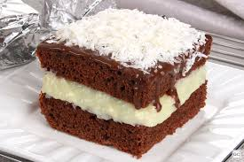

Bem-vindo ao Mundo dos Bolos 🍰
Bolo de Chocolate

Ingredientes:
- 3 ovos
- 2 xícaras de açúcar
- 1 xícara de óleo
- 1 xícara de leite morno
- 2 xícaras de farinha de trigo
- 1 xícara de chocolate em pó
- 1 colher (sopa) de fermento em pó
Modo de preparo:
- Bata os ovos com o açúcar até obter um creme fofo.
- Acrescente o óleo e o leite morno, misturando bem.
- Peneire a farinha e o chocolate em pó e incorpore à mistura.
- Adicione o fermento e misture suavemente.
- Despeje a massa na forma untada e leve ao forno a 180°C por 40 minutos.
- Deixe esfriar antes de desenformar.
Bolo de Cenoura
Ingredientes:
- 3 cenouras médias
- 4 ovos
- 1 xícara de óleo
- 2 xícaras de açúcar
- 2 xícaras de farinha de trigo
- 1 colher (sopa) de fermento em pó
Modo de preparo:
- Bata no liquidificador a cenoura, ovos, óleo e açúcar até formar um creme.
- Despeje a mistura em um recipiente e adicione a farinha de trigo peneirada.
- Acrescente o fermento e misture suavemente.
- Leve ao forno a 180°C por aproximadamente 40 minutos.
- Espere esfriar antes de servir.
Bolo Red Velvet
Ingredientes:
- 2 xícaras de farinha de trigo
- 1/4 xícara de cacau em pó
- 1 xícara de açúcar
- 1 colher (chá) de fermento
- 1/2 colher (chá) de bicarbonato de sódio
- 1 xícara de leite
- 1/2 xícara de óleo
- 2 ovos
- Corante vermelho
Modo de preparo:
- Misture os ingredientes secos em um recipiente.
- Em outro recipiente, bata os ovos, leite, óleo e corante vermelho.
- Incorpore os ingredientes secos e misture bem.
- Leve ao forno a 180°C por 35 minutos.
Bolo de Maracujá
Ingredientes:
- 2 xícaras de farinha de trigo
- 1 xícara de açúcar
- 3 ovos
- 1/2 xícara de óleo
- 1/2 xícara de suco de maracujá
- 1 colher (sopa) de fermento
Modo de preparo:
- Bata os ovos com o açúcar até obter um creme fofo.
- Adicione o óleo e o suco de maracujá, misturando bem.
- Acrescente a farinha e mexa até homogeneizar.
- Por último, adicione o fermento e misture delicadamente.
- Asse em forno a 180°C por cerca de 40 minutos.
Bolo de Leite Ninho
Ingredientes:
- 3 ovos
- 1 xícara de açúcar
- 1/2 xícara de óleo
- 1 xícara de leite
- 2 xícaras de farinha de trigo
- 1/2 xícara de leite em pó
- 1 colher (sopa) de fermento
Modo de preparo:
- Bata os ovos, o açúcar e o óleo.
- Adicione o leite e o leite em pó, misturando bem.
- Incorpore a farinha e misture até ficar homogêneo.
- Finalize com o fermento e asse a 180°C por 40 minutos.
Bolo de Amendoim
Ingredientes:
- 2 xícaras de farinha de trigo
- 1 xícara de açúcar
- 1/2 xícara de óleo
- 1/2 xícara de leite
- 1 xícara de amendoim triturado
- 1 colher (sopa) de fermento
Modo de preparo:
- Misture todos os ingredientes em uma tigela.
- Incorpore o fermento por último.
- Despeje em uma forma untada e asse a 180°C por 40 minutos.
Bolo de Prestígio

Ingredientes:
- 2 xícaras de farinha de trigo
- 1 xícara de açúcar
- 1/2 xícara de chocolate em pó
- 3 ovos
- 1 xícara de leite
- 1/2 xícara de óleo
- 1 colher (sopa) de fermento
- 1 xícara de coco ralado
Modo de preparo:
- Bata os ovos, o açúcar, o leite e o óleo.
- Adicione a farinha, o chocolate em pó e misture bem.
- Incorpore o fermento por último e misture delicadamente.
- Leve ao forno a 180°C por 40 minutos.
- Finalize com coco ralado por cima.
Bolo de Limão
Ingredientes:
- 2 xícaras de farinha de trigo
- 1 xícara de açúcar
- 1/2 xícara de óleo
- 1/2 xícara de suco de limão
- 3 ovos
- 1 colher (sopa) de fermento
Modo de preparo:
- Bata os ovos com o açúcar até ficar cremoso.
- Adicione o óleo e o suco de limão, misturando bem.
- Incorpore a farinha e mexa até a massa ficar homogênea.
- Por último, adicione o fermento e misture delicadamente.
- Leve ao forno a 180°C por 40 minutos.
Bolo de Nozes
Ingredientes:
- 2 xícaras de farinha de trigo
- 1 xícara de açúcar mascavo
- 1/2 xícara de óleo
- 1/2 xícara de leite
- 3 ovos
- 1 colher (sopa) de fermento
- 1 xícara de nozes picadas
Modo de preparo:
- Misture os ovos, o açúcar e o óleo.
- Adicione o leite e misture bem.
- Acrescente a farinha e mexa até ficar homogêneo.
- Por último, misture as nozes e o fermento.
- Asse em forno a 180°C por 40 minutos.